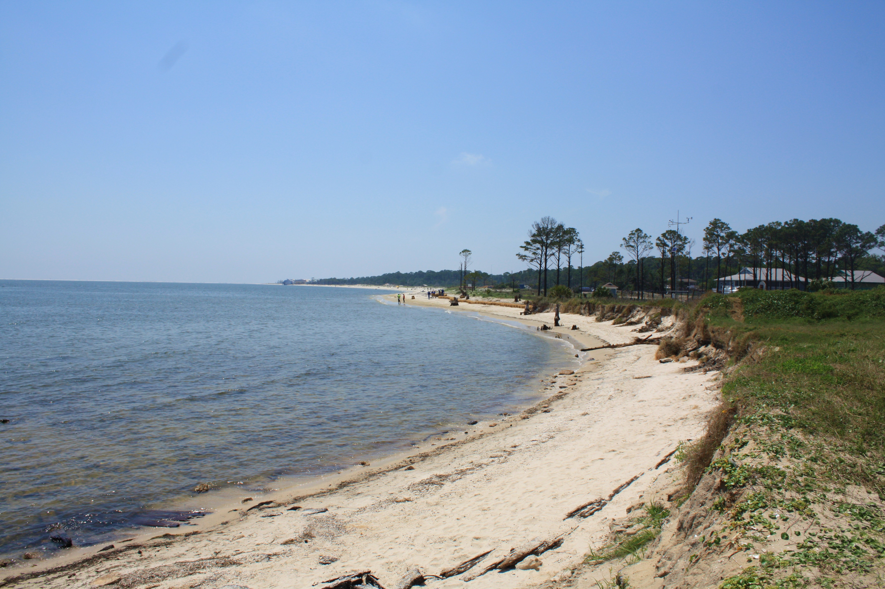
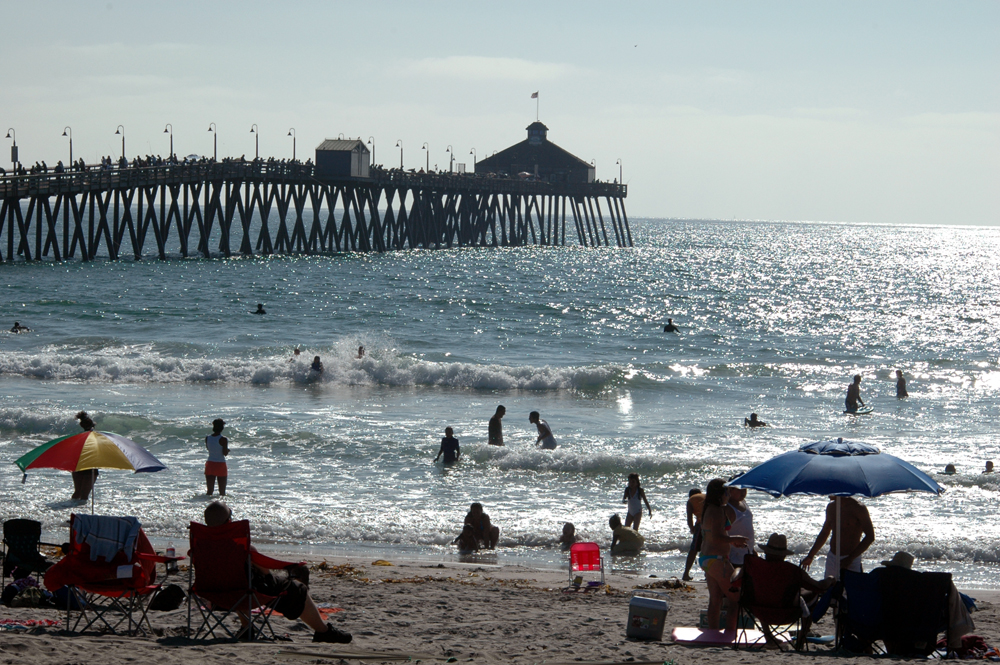

United States beaches
Dauphin Island
By Jeffrey Reed, CC BY-SA 3.0, via Wikimedia Commons
Dauphin Island is an island town in Mobile County, Alabama, United States, on a barrier island of the same name,
in the Gulf of Mexico. It incorporated in 1988. The population was 1,778 at the 2020 census, up from 1,238 at the 2010 census.
The town is part of the Mobile metropolitan area. The island (originally named Massacre Island) was renamed for Louis XIV of France's
great-grandson and heir, the dauphin, the future Louis XV of France. The name of the island is often mistaken as Dolphin Island; the
word dauphin is French for dolphin, but historically, the term was used as the title of the heir apparent to the French monarch.
The island is one of the Mississippi–Alabama barrier islands, with the Gulf of Mexico to the south, and the Mississippi Sound and Mobile
Bay to the north. The island's eastern end helps define the mouth of Mobile Bay. The eastern, wider portion of the island is shaded by
thick stands of pine trees and saw palmettos, but the narrow, western part of the island features scrub growth and few trees.
Dauphin Island is home to Fort Gaines, Dauphin Island Sea Lab, the Estuarium public aquarium, the Dauphin Island Airport, boat ramps, a
large public pier that sits on dry land, historic sites, several restaurants, new condominium developments, and numerous private homes.
Beaches attract tourism, and fishing is a popular activity in the waters around the island. The island is connected to the mainland by the
Gordon Persons Bridge.
Although the island has several bird sanctuaries, the main one is the 164-acre (66 ha) Audubon Bird Sanctuary. Because Dauphin Island is
the first land encountered by many birds as they migrate north from South America, many species can be found resting there before continuing
their journey.
In May 2012, the central public beach began charging for access. This marked the second beach on the island to charge the public following
the creation of the privately owned West End Beach.
History
Serpentine shell middens, perhaps 1,500 years old, attest to at least seasonal occupation by the Native American Mississippian
Mound Builder culture. Shell Mound Park, along the island's northern shore, is administered by the Alabama Marine Resources Division.
In 1519, the Spanish explorer Alonso Álvarez de Pineda was the first documented European to visit, staying long enough to map the island with
remarkable accuracy.
The island's French history began on January 31, 1699, when the explorer Pierre Le Moyne, sieur d'Iberville, one of the founders of French Louisiana,
arrived at Mobile Bay and anchored near the island on his way to explore the mouth of the Mississippi River. D'Iberville mistakenly named it Île du
Massacre (Massacre Island) because of a large pile of human skeletons discovered there. In reality, the site was a Mississippian burial mound which
had been broken open by a hurricane, not a massacre site; however, the dramatic misnomer stuck.
D'Iberville later established a port for Fort Louis de La Louisiane on the island due to its abundant timber, reliable supply of fresh water, and
deep-water harbor. The settlement consisted of a fort, a chapel, government-owned warehouses, and residences.
The island served as a major trading depot where goods from Saint-Domingue (Haiti), Mexico, Cuba and France were unloaded and a short-lived fur trade
was conducted. Before a channel was dredged, Mobile Bay was too shallow and its sandbars too treacherous for ocean-going vessels to travel up the bay
and Mobile River to Fort Louis de La Louisiane. Thus, smaller boats carried the cargo within Mobile Bay to and from Dauphin Island.
In 1719 the first African slaves of Alabama arrived at Dauphin Island. After the French and Indian War (known in Europe as the Seven Years' War) ended
in 1763, the island was ceded to the British. After the American Revolutionary War, the territory again came under Spanish jurisdiction, being part of
the Province of West Florida until 1812.
In 1795 after the Treaty of San Lorenzo was signed between Spain and the United States, new settlers began migrating to Alabama from Virginia, North &
South Carolina and Georgia.In 1805, the Chickasaw, Cherokee and Choctaw people were forced to cede their lands to the government. The Creek tribes aggressively
fought to hold their lands, but eventually were forced to cede in 1813.
Fort Gaines on the eastern tip of the island was built between 1821 and 1848. It was occupied by Confederate forces in 1861 and captured by the Union Army
during the Battle of Mobile Bay. The phrase, "Damn the torpedoes, full speed ahead," was supposedly spoken by U. S. Admiral David Farragut just a few hundred
yards from Dauphin Island's shore.
The first Sand Island Light, authorized in 1834, was replaced by a structure 150 feet (46 m) high, at a cost of $35,000, that was destroyed by Confederate
forces. The present lighthouse (1873; in use until 1970), has been placed on the National Register of Historic Places. Its ownership was recently
transferred from the U.S. Department of Interior to the town of Dauphin Island.
Ocean Beach

By S/n, via Wikimedia Commons
{kind=link}
Ocean Beach (also known as O.B.) is a beachfront neighborhood of San Diego, California.
Geography
Ocean Beach lies on the Pacific Ocean at the estuary of the San Diego River, at the western terminus of Interstate 8. Located about 7 mi (11 km) northwest of Downtown San Diego, it sits south of Mission Bay and Mission Beach and directly north of Point Loma. The O.B. community planning area comprises about 1 square mile (742 acres),[1] bounded on the north by the San Diego River, on the west by the Pacific Ocean, on the east by Froude St., Seaside St. and West Point Loma Boulevard, and on the south by Adair Street.
History
Prior to European contact, the Kumeyaay people inhabited Ocean Beach and had established the fishing encampment of Hapai.
The Kumeyaay visited the area to conduct fishing and food processing operations, as mussels, clams, abalone, and lobsters were harvested from the area.
The beach's initial name was Mussel Beach, for the mussels available there. Its current name, Ocean Beach, was given in 1887 by developers Billy
Carlson and Albert E. Higgins.
The pair built the Cliff House, a resort hotel, and subdivided the area into lots. To promote their subdivision, Carlson and Higgins organized
various activities, including mussel roasts and concerts. Despite their efforts, the development did not do well, because it was two and a half
hours by carriage from downtown San Diego. They rented a locomotive, but by that time, the boom ended and the development was put on hold.
The Ocean Beach Railroad, launched in April 1888, was a casualty of the economic decline. Passengers could take a ferry from San Diego to
Roseville in Point Loma to ride the train to the Cliff House. Later, Higgins committed suicide, and a fire started by a fallen chandelier burnt
down the Cliff House in 1898. Carlson sold the Ocean Beach tract to an Eastern financier, delaying its development for 20 years.
Carlson and Higgins were not the first to file a subdivision map in Ocean Beach. They filed with the city on May 28, 1887, but on April 22 of
that year J.M. DePuy filed "DePuy's Subdivision" on 15 blocks in the northern portion of O.B.
One of the earliest residents of Ocean Beach was D. C. Collier, who bought oceanfront property there in 1887 when he was just 16. He later
became one of the "fathers" of Ocean Beach, laying out streets, promoting sales, and building the Point Loma Railroad in 1909 to connect
Ocean Beach with the rest of San Diego. By 1910 there were 100 houses in Ocean Beach, compared to just 18 two years earlier. According to
historian Ruth Held, Collier's rail line "made OB possible." He also built Ocean Beach Elementary School (a two-room school) and donated
park land to the city. Most of that land became Cleator Community Park (a ballfield), Correia Middle School (originally named Collier
unior High School), a YMCA and a church; a small remnant at Greene and Soto streets is still called Collier Park.
The northern end of Ocean Beach was dominated in the early 20th century by the Wonderland Amusement Park, which opened on July 4, 1913 and
was constructed on eight oceanfront acres at Voltaire and Abbott streets. It boasted a large roller coaster, dance pavilion, menagerie,
roller skating rink, merry-go-round, children's playground, a petting zoo with a variety of animals including 500 monkeys, and 22,000
lights outlining the buildings. However, Wonderland went bankrupt in 1915 due to competition from the Panama-California Exposition in
Balboa Park and was sold at auction. It closed in 1916 after winter storms damaged the roller coaster. The name "Wonderland" lives on
in some Ocean Beach business names as well as the title of a documentary series on KPBS television hosted by Ocean Beach native Noah Tafolla.
In 1915, John D. Spreckels and his Bayshore Railway Company built a 1,500 ft (460 m) wooden bridge connecting Ocean Beach with Mission Beach.
The company used the bridge for a trolley, part of the San Diego Class 1 Streetcars, which connected OB with Downtown San Diego and encouraged
the development of both Ocean Beach and Mission Beach. The bridge was demolished in January 1951, thereby cutting off through traffic to
Ocean Beach from the Mission Beach and Pacific Beach communities.
The small cottages, bungalows, single-family homes and two-storied apartments in the residential areas, were filled with college students from several
local colleges, joined by a good number of sailors, retirees and middle-class families. Some of the bungalows built as tourist accommodations atop the
cliffs on either side of Niagara Avenue are still in use as businesses and homes.
With the dredging and development of Mission Bay and the dismantling of the Ocean Beach-Mission Beach bridge, O.B. became geographically isolated from
the rest of San Diego and the other beach communities, until the construction of Interstate 8 in 1967. The westernmost segment of I-8 from Interstate 5
to the terminus in Ocean Beach is officially labeled the "Ocean Beach Freeway".
Surfing was introduced to San Diego at Ocean Beach in 1916 when a local lifeguard borrowed a board from Duke Kahanamoku (although it's possible that George
Freeth surfed there between 1907 and 1909). By 1966, the sport was sufficiently established that the World Surfing Championship was held in O.B. Nat Young
won the event and was named world surfing champion.
Ocean Beach was once known as the Haight-Ashbury of San Diego. The community became an attraction for hippies, who eventually became accepted by many
local business establishments.[citation needed] The Black headshop opened on Newport Avenue, as well as the Ocean Beach People's Organic Food Market.
Beginning in the early 1970s, local development and land interests pressed for the development of Ocean Beach's oceanfront, with plans for tourist-oriented
resorts, hotels and a marina outlined in the Ocean Beach Precise Plan. With the passage of a 30 ft (9.1 m) height limit in 1972 and the re-writing of the
Precise Plan, the development plans for the waterfront were abandoned.
Imperial Beach
By Henryk Kotowski , CC BY-SA 3.0, via Wikimedia Commons
Imperial Beach is a residential beach city in San Diego County, California, with a population of 26,324 at the 2010 census. The city is the southernmost city in California and the West Coast of the United States. It is in the South Bay area of San Diego County, 14.1 miles (22.7 km) south of downtown San Diego and 5 miles (8 km) northwest of downtown Tijuana, Mexico.
Geography
Imperial Beach is located at 32°34′42″N 117°7′2″W (32.578255, -117.117111) making it the most southwesterly
city in the continental United States. According to the United States Census Bureau, the city has a total area of 4.5 square miles
(12 km2). 4.2 square miles (11 km2) of it is land and 0.3 square miles (0.78 km2) of it (7.22%) is water. The city occupies the
extreme southwest corner of the continental United States: bordered by Playas de Tijuana, Tijuana, Mexico to the south, Coronado,
California and the San Diego Bay to the north, San Diego to the east, and the Pacific Ocean to the west.
Imperial Beach is located in San Diego County, the fifth most-populous county in the United States and part of the San Diego Metropolitan
Area, the 17th largest metropolitan area in the United States with over 3 million people. It is also part of the San Diego – Tijuana
metropolitan area, the largest bi-national metropolitan area shared between the United States and Mexico with over 5 million people.
History
Imperial Beach sits on the traditional territory of the Kumeyaay people, who had established the village of Alyshuwii.
Founded in June 1887, the city takes its name from Imperial County, California, a desert climate 100 miles (161 km) east. Farmers and land
owners from the Imperial Valley came to the area in the late 1880s seeking cooler weather during summer months. In March 1887,
over 2,000 laborers descended upon nearby Coronado, California to construct the Hotel del Coronado, the largest resort in the world at the time.
A large number of the workers stayed in Imperial Beach and some would later make it their permanent homestead. The city would incorporate in 1956,
operating its own Mayor-council government providing city fire department service and policing by the formation of its own police department but
eventually, years later, through the contracting of services through the San Diego County Sheriff's Office.
Imperial Beach has undergone a significant makeover in the last ten years to become more visitor-friendly and commercially viable. In 2004,
the City of Imperial Beach began implementing a community redevelopment plan to improve the commercial corridor along Palm Avenue and Seacoast
Drive. However, aside from a few smaller hotels, Imperial Beach remains a highly residential city with little hotel or motel accommodation for
visitors. Future plans for the city allow for construction of additional hotels along the beach areas of Seacoast Drive. On September, 13, 2010,
after many years of planning, demolition officially began on the old Seacoast Inn located off Seacoast Drive. Construction of the new 22 million
dollar hotel, now renamed Pier South Resort, a 78-room, four-story, upscale Mediterranean-style resort with restaurant, spa and conference facilities,
was completed in December, 2013.